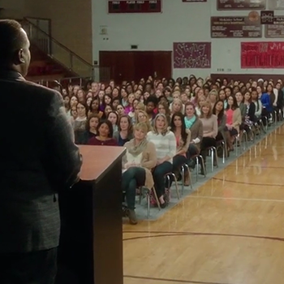
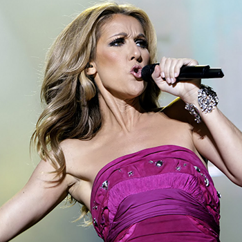
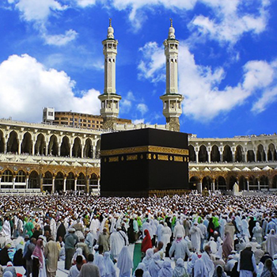
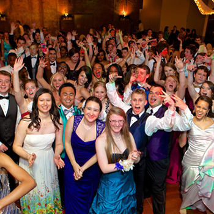
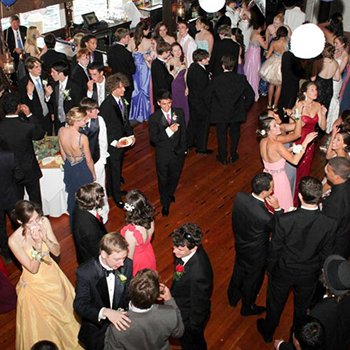

Visi
| Unggul dalam pengembangan kurikulum |
| Unggul dalam suasana pembelajaran yang menantang |
| Unggul dalam nilai kecerdasan pikiran |
| Unggul dalam budaya gemar membaca |
| Unggul dalam meningkatkan mutu lulusan|
Misi
| Meningkatkan pola berpikir dan strategi |
| Meningkatkan pembiasaan berahklak mulia |
| Meningkatkan kompetensi guru dan murid |
| Meningkatkan pelayanan prima warga sekolah |
| Meningkatkan potensi belajar siswa/siswi |
~Agenda Sekolah~

Rapat Orang Tua Kelas 9
Membahas Perpisahan & Study Tour
16 Februari 2017
Pukul ( 09.00-12.00 )
Lihat Agenda ->>>

Konser Celine Dion
Di Stadion SMPN 3 CIBADAK
16 Februari 2017
Pukul ( 20.00-22.00 )
Lihat Agenda ->>>

Untuk Kelas 7, 8, 9
Umroh Ketanah Suci Mekah
16 Februari 2017
( 16 Februari - 27 February 2017 )
Lihat Agenda ->>>

Untuk Kelas 7, 8, 9
Haji Ketanah Suci Mekah
16 Februari 2017
( 16 Februari - 27 February 2017 )
Lihat Agenda ->>>

Prom Night Kelas 9
Di Aula SMPN 3 CIBADAK
16 Februari 2017
Pukul ( 21.00-00.00 )
Lihat Agenda ->>>

Happy Party Kelas 7, 8, 9
Di Aula SMPN 3 CIBADAK
16 Februari 2017
Pukul ( 15.00-18.00 )
Lihat Agenda ->>>